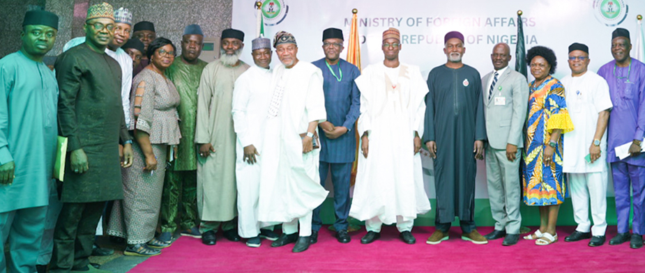

Coat of Arms
A black shield bearing two white wavy bands — the Niger and Benue rivers — supported by two horses and crowned by an eagle. Motto: Unity and Faith, Peace and Progress.
The name Nigeria was taken from the Niger river running through the country. This name was allegedly coined in the late 19th century by British journalist Flora Shaw, who later married Baron Frederick Lugard, a British colonial administrator.
Nigeria today is marked by the emergence in various epochs of civilisations, kingdoms, states and empires. The country gained independence from British colonial rule on 1 October 1960 and became a republic on 1 October 1963. It is a federation of 36 states and the Federal Capital Territory, Abuja — the most populous nation in Africa.
The origin of the name Niger, which originally applied only to the middle reaches of the Niger River, is uncertain. The word is likely an alteration of the Tuareg name egerew n-igerewen used by inhabitants along the middle reaches of the river around Timbuktu prior to 19th-century European colonialism.

Nigeria's territory has been home to civilisations and powerful states since the Palaeolithic period. Below are some of the most significant.
A group of city-states — including Kano, Katsina, Zaria and Gobir — that became major centres of trans-Saharan trade, Islamic scholarship and commercial exchange from the medieval period. The Hausa city-states were governed by rulers known as Habe, and later came under Fulani rule following the Jihad of Usman Dan Fodio in 1804, forming the Sokoto Caliphate. Their legacy endures in northern Nigerian governance, architecture and commerce today.
The long-lived Kanem-Bornu Empire dominated the Lake Chad basin for nearly a thousand years, connecting sub-Saharan Africa to North Africa and the Mediterranean world through trans-Saharan trade routes. The Kanuri Empire — which emerged around the 9th century CE — was among the continent's most durable and strategically influential states, maintaining diplomatic relations with North African powers and Ottoman Turkey. It survived until the colonial period, making it one of the longest-lasting political entities in African history.
From Ile-Ife — the spiritual cradle of the Yoruba and believed birthplace of human civilisation in Yoruba cosmology — to the expansive Oyo Empire, these states were renowned for sophisticated governance, art and the famed bronze and terracotta works of Ife that continue to astonish the art world. The Oyo Empire at its height was one of West Africa's largest and most powerful states, exerting control over much of present-day south-western Nigeria and parts of the Republic of Benin. The Ijebu, Egba, Ondo and other Yoruba sub-groups also developed distinct political structures and cultural traditions.
One of West Africa's oldest and most highly developed states, the Benin Kingdom traces its origins to the 9th century CE. It is celebrated worldwide for its magnificent Benin Bronzes — a treasure of world art comprising thousands of plaques, sculptures and ceremonial objects created by the royal guild of brass-smiths. The Kingdom maintained diplomatic contact with Portugal as early as the 15th century. An enduring royal institution, the Oba of Benin's monarchy continues today, and international efforts are ongoing to repatriate Benin Bronzes held in museums across Europe and North America.
The Igbo and Niger Delta peoples developed largely autonomous, republican communities and city-states — vibrant hubs of trade, craftsmanship and democratic assembly. The Nri Kingdom, one of the oldest in West Africa, exercised spiritual and religious authority across Igboland without maintaining a standing army. The Aro Confederacy controlled long-distance trade networks across eastern Nigeria. The Delta city-states of Bonny, Calabar, Opobo and Brass became major centres of the Atlantic trade, and their merchant princes — including the legendary King Jaja of Opobo — were shrewd diplomats who shaped the commercial history of the region.
European contact with the peoples of present-day Nigeria began in the 15th century when Portuguese explorers arrived on the coast. The subsequent centuries brought intensive engagement through the trans-Atlantic slave trade, which had a devastating impact on the region — with an estimated 3.5 million Nigerians transported to the Americas as enslaved people over the course of the trade. British interest in the region grew following the abolition of the slave trade in 1807, shifting attention to "legitimate" commerce — particularly palm oil. By 1861, Britain formally annexed Lagos as a Crown Colony, marking the beginning of formal colonial rule in the territory that would become Nigeria.
Following the annexation of Lagos in 1861, British expansion into the interior proceeded through a combination of treaties, trade agreements and military conquest. The Royal Niger Company — chartered in 1886 — administered large parts of the territory under commercial authority. In 1900, Britain revoked the company's charter and established the Protectorate of Northern Nigeria and the Protectorate of Southern Nigeria as formal colonial territories. On 1 January 1914, Governor-General Frederick Lugard amalgamated the Northern and Southern Protectorates with the Colony of Lagos to form the unified Colony and Protectorate of Nigeria — the territorial entity from which the modern nation-state of Nigeria would emerge.
Nigeria achieved independence on 1 October 1960, with Sir Abubakar Tafawa Balewa becoming the country's first Prime Minister. It became a republic on 1 October 1963 with Dr Nnamdi Azikiwe as the first President. The country subsequently navigated a civil war (1967–1970), alternating periods of military and civilian rule, and the landmark return to democratic governance in 1999 — which ushered in the longest continuous democratic period in the nation's history. Since 1999, seven peaceful elections have transferred power between parties and presidents, cementing Nigeria's status as a continental leader in diplomacy, economy, culture and human capital. Today, Nigeria is Africa's most populous nation and its largest economy, with a global diaspora of over 17 million people who serve as ambassadors of the nation's culture, enterprise and potential.
The Nigerian government in September 1988 launched the "National Cultural Policy." This policy document defined culture as "the totality of the way of life evolved by a people in their attempt to meet the challenges in their environment which gives order and meaning to their social, political, economic, aesthetic and religious norms and modes of organisation, thus distinguishing a people from their neighbour."
As a further step, the Federal Government in June 1999 created the Federal Ministry of Culture and Tourism. By mid 2006, the ministry was renamed Federal Ministry of Tourism, Culture and National Orientation, with the mandate to promote the nation's rich cultural heritage through the identification, development and marketing of its diverse cultural and tourism potentials. In November 2015, the Ministry of Culture and Tourism was later merged with the ministry of information, now known as the Ministry of Information, Culture and Tourism.
The culture of Nigeria is shaped by its multiple ethnic groups. The country has over 50 languages and over 250 dialects and ethnic groups. The three largest ethnic groups are the Hausa-Fulani who are predominant in the north, the Igbo who are predominant in the south-east, and the Yoruba who are predominant in the south-west. The Edo people are predominant in the region between Yoruba land and Igbo land. This group is followed by the Ibibio/Annang/Efik people of coastal south-eastern Nigeria and the Ijaw of the Niger Delta.

Nigeria's cultural diversity is one of its greatest strengths. With over 250 ethnic groups and more than 500 languages, the country's cultural mosaic is defined by a rich tapestry of traditions, practices and beliefs that span millennia. The Hausa-Fulani, Yoruba and Igbo are the three largest groups, but hundreds of other peoples — including the Tiv, Ibibio, Ijaw, Kanuri, Nupe, Urhobo and Edo — each bring distinct art forms, food traditions, governance systems and worldviews.
The rest of Nigeria's ethnic groups (sometimes called "minorities") are found all over the country but especially in the middle belt and north. The Hausa tend to be Muslim and the Igbo are predominantly Christian. The Efik, Ibibio and Annang people are mainly Christian. The Yoruba have a balance of members adherent to both Islam and Christianity, and indigenous beliefs are often blended with Christian practices. Despite this diversity, Nigerians are bound by common ties — a shared national identity, the English language, and a deep collective pride in what it means to be Nigerian. The National Cultural Policy affirmed that culture is central to national development.
Nigeria has one of Africa's richest literary traditions. Chinua Achebe's Things Fall Apart (1958) is considered one of the most important novels of the 20th century, having sold over 20 million copies worldwide and been translated into more than 57 languages. Wole Soyinka became Africa's first Nobel Laureate in Literature in 1986. Other internationally acclaimed writers include Ben Okri (Booker Prize winner, 1991), Chimamanda Ngozi Adichie, Helon Habila, Chris Abani and Teju Cole.
Nigerian theatre — both in English and indigenous languages — is vibrant and diverse. The Yoruba travelling theatre tradition, pioneered by Hubert Ogunde in the 1940s, helped shape a uniquely Nigerian dramatic art form that continues to thrive. Dance as a performing art is deeply embedded in Nigerian culture: from the acrobatic Atilogwu dance of the Igbo to the ceremonial Eyo masquerade of Lagos and the spectacular Durbar festivals of the north — each performance tradition carries centuries of history and meaning.
Nigerian cuisine is as diverse as its people. Jollof rice — one of West Africa's most celebrated dishes — is a staple at every social gathering. Other iconic dishes include egusi soup, pounded yam, suya (spiced grilled meat), moi moi, akara (bean fritters), ogbono soup, banga soup, ofada rice and pepper soup. Each region has its own signature specialities: the north is famous for tuwo shinkafa and kilishi; the south-west for amala and ewedu soup; and the south-east for ofe onugbu (bitter leaf soup) and oha soup.
Nigerian street food culture is vibrant, with boli (roasted plantain), suya stalls, akara sellers and fresh agege bread being iconic sights across the country. Nigeria's growing middle class and its dynamic diaspora have turned Nigerian gastronomy into a global brand, with Nigerian restaurants thriving in London, New York, Houston and across Europe. The annual Jollof Festival and other culinary events celebrate Nigeria's rich food heritage and its growing influence on global cuisine.
Nigerian arts and crafts encompass a rich tradition of weaving, pottery, bronze casting, woodcarving, beadwork, leatherwork and textile design. In architecture, the Hausa-Fulani adobe structures of northern Nigeria — particularly the decorated mud-brick buildings of Zaria, Kano and the old city of Katsina — represent a distinctive architectural heritage. The ornate carved wooden doors of the Yoruba, the elaborate compound walls of the Igbo and the decorated facades of Nupe architecture are further expressions of Nigerian artisanal mastery.
Traditional Nigerian art often serves functional, ceremonial and social purposes — carved doors, bronze plaques, beadwork crowns and woven textiles (such as the iconic aso-oke fabric of the Yoruba and the akwete cloth of the Igbo) are both artistic expressions and markers of identity, status and spiritual meaning. Nigeria's artisans continue to innovate within their traditions, producing works that are exported to collectors and cultural institutions worldwide, and commanding growing prices at international art auctions and fairs.
Contemporary Nigerian art has gained significant international recognition and commands growing prices at major auction houses. Ben Enwonwu — Nigeria's most celebrated modern artist — is best known for his Tutu series of portraits, one of which sold for $1.2 million at Bonhams London in 2018. Other titans of Nigerian modern art include Yusuf Grillo, Bruce Onobrakpeya and Twins Seven Seven, who established the foundations of contemporary Nigerian visual culture in the 1960s and 70s.
A new generation of Nigerian artists is now taking the global art world by storm: Njideka Akunyili Crosby, whose collaged paintings explore identity and belonging across cultures, has sold works for over $3 million; Toyin Ojih Odutola's intricate portrait drawings appear in the collections of MoMA and the Whitney Museum; and body-painter Laolu Senbanjo has collaborated with Beyoncé. Nigeria's contemporary art scene — centred in Lagos, Abuja and Port Harcourt — is nurtured by galleries, art fairs and creative collectives like Art X Lagos, connecting Nigerian artists to the global market.
Nigeria's musical heritage is extraordinarily rich and varied. Traditional music differs dramatically by region and ethnic group: the talking drum (gangan/dundun) is central to Yoruba ceremonial and social life; the kakaki (long ceremonial trumpet) heralds royal occasions in northern Nigeria; and the ogene gong and udu clay pot drum drive Igbo masquerade festivals. Indigenous dance traditions are equally diverse: the Etighi of the Ibibio, the Swange of the Tiv, the Atilogwu (acrobatic dance) of the Igbo and the Bata dance of the Yoruba each convey stories, values and spiritual meaning transmitted across generations.
The annual National Arts and Culture Festival (NAFEST) — held in rotating host states across Nigeria — brings together traditional musicians, dancers and craftspeople from all 36 states and the FCT to celebrate the country's diverse cultural heritage and promote national unity through the arts. The Argungu Fishing Festival in Kebbi State, the Eyo Festival in Lagos, the Osun-Osogbo Festival in Osun State and the Calabar Carnival in Cross River State are among the country's most spectacular annual cultural events, drawing tens of thousands of participants and visitors from across Nigeria and around the world.
Nollywood is the world's second-largest film industry by volume of output, producing over 2,500 films annually with a combined annual revenue exceeding $1 billion. Founded in the early 1990s with the home-video film Living in Bondage (1992), it has grown from low-budget productions into a sophisticated industry with major streaming distribution on Netflix, Amazon Prime Video and dedicated platforms like Africa Magic. Nigerian film-makers including Genevieve Nnaji (whose film Lionheart was Netflix's first original Nigerian acquisition), Kunle Afolayan and Kemi Adetiba are winning international acclaim and awards.
Afrobeats — pioneered by Fela Anikulapo-Kuti and King Sunny Ade, and evolved through the work of Wizkid, Burna Boy, Davido, Tiwa Savage, Tems and Asake — has become one of the dominant global sounds of the 21st century. Burna Boy won the Grammy Award for Best World Music Album in 2021 and Best African Music Performance in 2024. Nigerian music is now a major cultural and economic export, with Nigerian artists filling arenas and headlining festivals across Europe, North America, Asia and the rest of Africa, earning hundreds of millions of dollars in revenue annually.
Nigeria has developed one of Africa's most vibrant and commercially successful stand-up comedy scenes. Beginning in the 1990s with pioneers like Ali Baba — widely regarded as the father of corporate comedy in Nigeria — the industry has grown to include household names such as Basketmouth, Ayo Makun (AY), Bovi, Seyi Law, Gordons and Gbenga Adeyinka. These comedians have built multi-million dollar entertainment businesses combining live shows, television, film and brand partnerships.
The annual "Night of a Thousand Laughs" — conceived by Ali Baba and running for over 25 years — is arguably West Africa's biggest comedy show, attracting thousands of attendees and some of the biggest names in African entertainment. A new generation of digital-native Nigerian comedians — including Taaooma, Officer Woos and Sydney Talker — have amassed millions of followers on social media, taking Nigerian humour to global audiences through short-form video content, stand-up specials and feature films. Nigerian comedy has become a significant soft-power asset, projecting Nigeria's warmth, wit and resilience to the world.
Nigerian people are citizens and people with ancestry from Nigeria. Nigeria is composed of multiple ethnic groups and cultures, and the term "Nigerian" refers to a citizenship-based civic nationality.
Nigerians derive from over 250 ethnic groups and languages. Economic factors result in significant mobility among these groups, creating intermixing in cities, with English serving as the lingua franca. The largest groups are the Hausa in the north, the Yoruba in the south-west and the Igbo in the south-east, who account for around a fifth of the population each.
In the 13 northern states, the vast majority of people are Muslim. In the southern states, the majority of Nigerians are Christian. The dominant indigenous languages of the south are Yoruba and Igbo, while the north is predominantly Hausa. Pidgin — a mix of African languages and English — is also common throughout southern Nigeria and widely understood across the country.

Nigeria was proclaimed Africa's largest economy in 2014, following the rebased calculation of its Gross Domestic Product (GDP) to capture hitherto undervalued or neglected sectors such as its flourishing entertainment industry (Nollywood and Nigerian Music) and Information and Communications Technology (ICT).
Nigeria's GDP then totalled over 510 billion dollars. The GDP has also been registering an impressive growth rate in recent years, exceeding 6% annually. Nigeria is one of Africa's most attractive destinations for investors. Besides the diverse natural resources it is endowed with, Nigeria disposes of a huge human capital, with trained and qualified professionals readily available at competitive costs in the employment market. Investors would also be impressed by the array of investment incentives they can take advantage of in various sectors. Nigeria, investors would quickly discover, is a market characterised by the high return on investment it offers. Nigeria's investment environment is supported by strong and reliable financial institutions and government agencies.

The Nigerian Investment Promotion Commission (NIPC) is the Federal Government agency responsible for promoting, coordinating and monitoring investment in Nigeria. Established by the NIPC Act of 1995, it provides information, facilitation and aftercare services to local and foreign investors and works to eliminate bureaucratic bottlenecks for those seeking to do business in Nigeria. The NIPC also administers investment incentives on behalf of the Federal Government and maintains a comprehensive database of investment opportunities across all sectors and states of the federation.
The One Stop Investment Centre (OSIC) is a joint initiative of the NIPC and key government ministries, departments and agencies designed to streamline and accelerate the business entry process for investors. Co-located at the NIPC headquarters in Abuja, OSIC brings together representatives from the CAC, FIRS, Nigeria Immigration Service, NAFDAC, SON, the Central Bank of Nigeria and other agencies under one roof — enabling investors to complete multiple registration and licensing processes in a single location and significantly reducing the time and cost of establishing a business in Nigeria.
All businesses — local and foreign — are required by law to be registered with the Corporate Affairs Commission (CAC) before commencing operations in Nigeria. This requirement is established under the Companies and Allied Matters Act (CAMA 2020), which is the principal legislation governing company formation, registration and regulation in Nigeria. The registration process has been significantly digitised, with the CAC's online portal enabling the incorporation of companies, registration of business names and filing of annual returns from anywhere in the world.
The company registration process in Nigeria involves several key steps: conducting a name search and reservation with the CAC; preparation and filing of the Memorandum and Articles of Association; payment of the requisite filing fees; and issuance of the Certificate of Incorporation upon approval. Since the enactment of CAMA 2020, the process has been considerably simplified — the minimum number of shareholders for a private company has been reduced to one, and the requirement for a company secretary has been relaxed for small companies. The CAC's digital platform allows most steps to be completed online, and incorporation can typically be achieved within 24–48 hours for straightforward applications.
Foreign companies wishing to carry on business in Nigeria must incorporate a local subsidiary, register as a branch or establish a representative office, as provided under Part B of CAMA 2020. A foreign company may be incorporated as a private limited liability company (Ltd) or a public limited company (Plc). It must appoint a local director resident in Nigeria, maintain a registered office address in Nigeria and file its annual returns with the CAC. Foreign companies in certain sectors — such as oil and gas, telecommunications and banking — may also be required to comply with sector-specific local content requirements stipulated by relevant regulatory authorities.
Under CAMA 2020, certain categories of foreign companies may apply to the Minister of Trade and Investment for exemption from the mandatory local incorporation requirement. These typically include foreign companies invited to Nigeria by or with the approval of the Federal Government to execute specific projects; foreign companies in the shipping, air transport or business transit sectors; and foreign companies engaged solely in export promotion activities. Exemptions are granted on a case-by-case basis and subject to conditions, and do not exempt the company from complying with other applicable Nigerian laws and regulations governing its operations.
The Corporate Affairs Commission (CAC) is the federal statutory body responsible for incorporating and regulating companies, business names and incorporated trustees in Nigeria. Established by CAMA and now operating under CAMA 2020, the CAC maintains the national register of companies, ensures compliance with corporate governance requirements and enforces the statutory obligations of registered entities. The CAC has undertaken significant modernisation efforts in recent years, migrating to a fully digital registration platform that enables online incorporation, annual return filing, share allotment changes and other corporate secretarial activities without the need for physical visits to CAC offices.
Foreign companies that wish to establish a presence in Nigeria for liaison, market research and promotional purposes — without carrying on actual business activities — may set up a representative office. A representative office is not a separate legal entity and cannot earn revenue or enter into commercial contracts on behalf of its parent company. It must be registered with the CAC and comply with applicable tax and immigration regulations. Representative offices are a common first step for multinational companies exploring the Nigerian market before committing to full incorporation.
Nigeria's investment legislative framework is anchored by the Nigerian Investment Promotion Commission Act (NIPC Act) of 1995, which opened virtually all sectors of the Nigerian economy to foreign investment. The Companies and Allied Matters Act (CAMA 2020) governs company formation and corporate governance. The Foreign Exchange (Monitoring and Miscellaneous Provisions) Act provides for the free repatriation of profits, dividends and capital by foreign investors. Sector-specific legislation — including the Petroleum Industry Act (PIA 2021), the Banks and Other Financial Institutions Act (BOFIA 2020), the Nigerian Communications Act and the Electric Power Sector Reform Act — further define the regulatory environment in their respective sectors.
Nigeria's investment protection framework provides foreign investors with strong legal guarantees. The NIPC Act prohibits the nationalisation or expropriation of foreign enterprises without the payment of fair and adequate compensation. The Act also guarantees that in the event of any dispute between a foreign investor and the Nigerian Government, the investor may seek redress through international arbitration, including under the rules of the International Centre for Settlement of Investment Disputes (ICSID) or the United Nations Commission on International Trade Law (UNCITRAL). Nigeria is a member of the Multilateral Investment Guarantee Agency (MIGA) and has signed bilateral investment treaties with numerous countries providing additional layers of protection.
Nigeria has signed Bilateral Investment Treaties (BITs) and Investment Promotion and Protection Agreements (IPPAs) with numerous countries, including the United Kingdom, France, Germany, the Netherlands, South Korea and China. These treaties provide investors with legal protections against expropriation, guarantee fair and equitable treatment, ensure the free transfer of funds, and provide access to international arbitration for dispute resolution. Nigeria is also party to the African Continental Free Trade Area (AfCFTA) agreement, which creates the world's largest free trade area by number of participating countries and provides a major boost to intra-African investment flows.
Nigeria's financial system is one of the most developed in sub-Saharan Africa, comprising commercial banks, development finance institutions, capital markets, insurance companies and a range of non-bank financial institutions. The system is overseen by the Central Bank of Nigeria (CBN), the Securities and Exchange Commission (SEC), the Nigerian Deposit Insurance Corporation (NDIC) and the National Insurance Commission (NAICOM). Together, these regulators provide a stable and well-regulated environment for investment, banking, capital markets operations and financial services. The Debt Management Office (DMO) and the Federal Inland Revenue Service (FIRS) further support fiscal management and tax administration at the federal level.
The Federal Ministry of Finance, Budget and National Planning is responsible for formulating and implementing fiscal policy, managing Nigeria's public finances, coordinating economic planning and overseeing the federal budget process. It supervises numerous agencies including the Federal Inland Revenue Service (FIRS), the Debt Management Office (DMO), the Nigerian Customs Service and the Budget Office of the Federation. The Ministry plays a central role in shaping the economic environment for investment, including through tax policy, trade and investment incentives, and the coordination of development finance from international financial institutions such as the World Bank, the African Development Bank and the International Monetary Fund.
The Central Bank of Nigeria (CBN) is the apex monetary authority of the Federal Republic of Nigeria. It is responsible for formulating and implementing monetary policy, managing the country's external reserves, maintaining price stability and promoting a sound financial system. The CBN regulates and supervises commercial banks, merchant banks, microfinance banks and other financial institutions operating in Nigeria. It also manages the foreign exchange market and is responsible for issuing the Nigerian Naira. For foreign investors, the CBN's policies on foreign exchange repatriation, capital importation certificates and the official exchange rate regime are key considerations when planning Nigerian investments.
The Nigerian Deposit Insurance Corporation (NDIC) is a federal government agency that provides deposit insurance to protect bank customers and promote financial system stability. It insures deposits in commercial banks, microfinance banks and primary mortgage institutions up to prescribed limits, ensuring that ordinary depositors are protected in the event of a bank failure. The NDIC works closely with the Central Bank of Nigeria in the supervision of insured institutions and plays a key role in maintaining public confidence in the Nigerian banking system — an important factor for both domestic and foreign investors evaluating the country's financial system.
The Securities and Exchange Commission (SEC) is the apex regulatory body for the Nigerian capital market. It is responsible for registering and regulating capital market operators, reviewing and approving public offers of securities, protecting investors from unfair and inequitable trade practices and ensuring the development of a fair, efficient and transparent capital market. The Nigerian Stock Exchange (now NGX Group) operates under SEC oversight and provides a platform for companies to raise capital and for investors to trade equities, bonds and other securities. Nigeria's capital market has seen significant growth, with the NGX All-Share Index repeatedly reaching record highs as investor confidence grows.
The National Insurance Commission (NAICOM) is the regulatory body for insurance business in Nigeria. It is responsible for licensing and supervising insurance companies, ensuring solvency and compliance with the Insurance Act, protecting policyholders and promoting the development of the insurance industry. Nigeria's insurance sector, while historically underpenetrated relative to the size of the economy, is growing rapidly as awareness increases and regulatory reforms take effect. NAICOM's recapitalisation programme has strengthened insurance companies' capital bases, improving their capacity to underwrite larger risks and attract international reinsurance partnerships.
Nigeria's money market is a well-developed short-term financial market operating under the regulatory oversight of the Central Bank of Nigeria. It provides facilities for the borrowing and lending of short-term funds, typically with maturities of one year or less. Key instruments include Treasury Bills (TBs), Federal Government Bonds, Commercial Papers, Bankers' Acceptances and inter-bank placements. The money market serves as an important tool for monetary policy implementation, with the CBN using open market operations (OMO) to manage liquidity in the banking system and influence short-term interest rates.
Discount houses in Nigeria are non-bank financial intermediaries that operate primarily in the money market, dealing in short-term government securities and providing liquidity management services. They serve as important intermediaries between the Central Bank of Nigeria and commercial banks, facilitating the placement of government securities and acting as market makers in the secondary market for Treasury Bills and other short-term instruments. While their numbers have consolidated over the years, discount houses continue to play a role in the efficient functioning of Nigeria's short-term financial markets and the implementation of monetary policy.
The Debt Management Office (DMO) is the Federal Government agency responsible for managing Nigeria's national debt in a manner that minimises cost and risk while supporting macroeconomic stability. Established in 2000, the DMO advises the government on borrowing policies and debt sustainability, coordinates the issuance of government securities including Federal Government Bonds and Treasury Bills in both domestic and international capital markets, and maintains a comprehensive record of Nigeria's public debt. The DMO has successfully issued Eurobonds, Diaspora Bonds and Green Bonds in the international market, demonstrating Nigeria's access to global capital and diversifying its funding sources.
The Federal Inland Revenue Service (FIRS) is the Federal Government's primary tax collection agency, responsible for assessing, collecting and accounting for taxes and levies due to the Federal Government of Nigeria. Key taxes administered by FIRS include Companies Income Tax (CIT), Value Added Tax (VAT), Petroleum Profit Tax (PPT), Withholding Tax and Capital Gains Tax. FIRS has undergone significant modernisation, with a digital tax administration platform enabling online filing and payment of taxes. Foreign investors should be aware of Nigeria's tax obligations including the applicable tax rates, available incentives and reliefs, transfer pricing regulations and the country's network of Double Taxation Agreements (DTAs) with numerous partner countries.
The Bank of Agriculture (BOA) is a Federal Government development finance institution dedicated to providing agricultural credit and development finance to farmers, agri-businesses and rural communities across Nigeria. It offers tailored loan products for crop production, livestock, fisheries, agro-processing and rural infrastructure, with interest rates and tenors designed to meet the specific needs of agricultural borrowers. The BOA plays a critical role in the Federal Government's food security and agricultural transformation agenda, supporting the development of Nigeria's agricultural sector — which employs an estimated 35% of the workforce — as a key driver of economic diversification and rural development.
The Bank of Industry (BOI) is Nigeria's oldest and largest development finance institution, providing long-term low-interest financing to industrial enterprises across all sectors of the economy. The BOI offers term loans, equity investment and guarantees to manufacturing companies, MSMEs, agribusinesses and other enterprises at concessionary rates. It has disbursed billions of naira in loans to thousands of businesses across Nigeria, contributing to job creation, industrial output and economic diversification. The BOI also administers special funds on behalf of the Federal Government, including the Textile Intervention Fund, the MSME Investment Fund and various sector-specific credit facilities designed to stimulate investment in priority areas.
Nigeria has a comprehensive framework of laws and regulatory agencies governing business ethics, product quality and consumer protection. Companies operating in Nigeria are expected to comply with the highest standards of corporate governance, transparency and ethical business conduct. Key legislation includes the Companies Income Tax Act, the Investment and Securities Act, the Consumer Protection Council Act and the Federal Competition and Consumer Protection Act (FCCPA 2019) — which established the Federal Competition and Consumer Protection Commission (FCCPC) as the apex consumer protection authority. Businesses must also comply with sector-specific product standards, labelling requirements and health and safety regulations enforced by dedicated regulatory agencies.
The Standard Organisation of Nigeria (SON) is the federal statutory agency responsible for standardisation and quality assurance of all products and services in Nigeria. SON develops and publishes Nigerian Industrial Standards (NIS), conducts conformity assessments and certifies products manufactured in or imported into Nigeria, and enforces compliance with established standards across industries. Products bearing the SON's mandatory conformity assessment certification mark have been verified to meet Nigeria's safety, health and quality requirements. For manufacturers and importers, SON certification is a legal requirement for most product categories and an important consideration for businesses entering or supplying the Nigerian market.
The National Agency for Food and Drug Administration and Control (NAFDAC) is the federal agency responsible for regulating and controlling the manufacture, importation, exportation, advertisement, distribution, sale and use of food, drugs, cosmetics, medical devices, chemicals and packaged water in Nigeria. NAFDAC registration is mandatory for regulated products before they can be legally sold or distributed in the Nigerian market. The agency conducts laboratory testing, facility inspections, market surveillance and public education campaigns to protect public health. NAFDAC has been particularly vigorous in its fight against counterfeit and substandard medicines, making significant improvements to the quality and safety of healthcare products available in Nigeria.
The National Drug Law Enforcement Agency (NDLEA) is the Federal Government agency responsible for enforcing Nigeria's drug laws, eradicating the illicit cultivation, processing, trafficking and abuse of narcotic drugs and psychotropic substances. The NDLEA operates at all major ports of entry, land borders and airports, conducting inspections and investigations to intercept drug shipments and apprehend traffickers. In recent years, under an invigorated leadership, the NDLEA has recorded unprecedented drug seizures and arrests, demonstrating the Federal Government's commitment to ridding Nigeria of the scourge of drug trafficking and abuse. Compliance with Nigeria's narcotics and controlled substances regulations is mandatory for all pharmaceutical manufacturers, importers and distributors.
The Economic and Financial Crimes Commission (EFCC) and the Independent Corrupt Practices and Other Related Offences Commission (ICPC) are the Federal Government's primary anti-corruption and anti-money laundering agencies. The EFCC is responsible for investigating and prosecuting financial crimes including advance fee fraud, money laundering, foreign exchange malpractice and other economic crimes. The ICPC focuses on institutional corruption — investigating and prosecuting public officials for bribery and abuse of office. Both agencies work in close collaboration with international partners including FATF, Interpol and law enforcement agencies in Nigeria's bilateral partner countries. Businesses operating in Nigeria are expected to implement robust anti-money laundering and anti-bribery compliance programmes.
Nigeria has a wide variety of different natural resources. It is richly endowed with a variety of natural resources ranging from precious metals and various stones to industrial minerals such as Barytes, Gypsum, Kaolin and Marble. Most of these deposits are yet to be fully exploited.
Statistically, the level of exploitation of these minerals is very low in relation to the extent of deposit found in the country. One of the objectives of the National Policy on Solid Minerals is to ensure the orderly development of the mineral resources of the country. Beyond solid minerals, Nigeria is one of the world's leading producers of crude oil and natural gas, and holds extensive reserves that have shaped the nation's economy and its international relationships for decades.
| S/N | State | Natural Resources |
|---|---|---|
| 1 | Abia | Gold, Lead/Zinc, Limestone, Oil/Gas & Salt |
| 2 | Abuja (FCT) | Cassiterite, Clay, Dolomite, Gold, Lead/Zinc, Marble & Tantalite |
| 3 | Adamawa | Bentonite, Gypsum, Kaolin & Magnesite |
| 4 | Akwa Ibom | Clay, Lead/Zinc, Lignite, Limestone, Oil/Gas, Salt & Uranium |
| 5 | Anambra | Clay, Glass-Sand, Gypsum, Iron-ore, Lead/Zinc, Lignite, Limestone, Phosphate & Salt |
| 6 | Bauchi | Gold, Cassiterite (tin ore), Columbite, Gypsum, Wolfram, Coal, Limestone, Lignite, Iron-ore & Clay |
| 7 | Bayelsa | Clay, Gypsum, Lead/Zinc, Lignite, Limestone, Manganese, Oil/Gas & Uranium |
| 8 | Benue | Barite, Clay, Coal, Gemstone, Gypsum, Iron-Ore, Lead/Zinc, Limestone, Marble & Salt |
| 9 | Borno | Bentonite, Clay, Diatomite, Gypsum, Hydro-carbon, Kaolin & Limestone |
| 10 | Cross River | Barite, Lead/Zinc, Lignite, Limestone, Manganese, Oil/Gas, Salt & Uranium |
| 11 | Delta | Clay, Glass-sand, Gypsum, Iron-ore, Kaolin, Lignite, Marble & Oil/Gas |
| 12 | Ebonyi | Gold, Lead/Zinc & Salt |
| 13 | Edo | Bitumen, Clay, Dolomite, Phosphate, Glass-sand, Gold, Gypsum, Iron-ore, Lignite, Limestone, Marble & Oil/Gas |
| 14 | Ekiti | Feldspar, Granite, Kaolin, Syenite & Tatum |
| 15 | Enugu | Coal, Lead/Zinc & Limestone |
| 16 | Gombe | Gemstone & Gypsum |
| 17 | Imo | Gypsum, Lead/Zinc, Lignite, Limestone, Marcasite, Oil/Gas, Phosphate & Salt |
| 18 | Jigawa | Barites |
| 19 | Kaduna | Amethyst, Aqua Marine, Asbestos, Clay, Feldspar, Gemstone, Gold, Graphite, Kaolin, Kyanite, Mica, Rock Crystal, Ruby, Sapphire, Topaz & Tourmaline |
| 20 | Kano | Cassiterite, Copper, Gemstone, Glass-sand, Lead/Zinc, Pyrochlore & Tantalite |
| 21 | Katsina | Kaolin, Marble & Salt |
| 22 | Kebbi | Gold |
| 23 | Kogi | Coal, Dolomite, Feldspar, Gypsum, Iron-ore, Kaolin, Marble, Talc & Tantalite |
| 24 | Kwara | Cassiterite, Columbite, Feldspar, Gold, Iron-ore, Marble, Mica & Tantalite |
| 25 | Lagos | Bitumen, Clay & Glass-sand |
| 26 | Nasarawa | Amethyst, Barite, Cassiterite, Chalcopyrite, Clay, Columbite, Coking Coal, Dolomite/Marble, Feldspar, Galena, Iron-ore, Limestone, Mica, Salt, Sapphire, Talc, Tantalite, Tourmaline Quartz & Zircon |
| 27 | Niger | Gold, Lead/Zinc & Talc |
| 28 | Ogun | Bitumen, Clay, Feldspar, Gemstone, Kaolin, Limestone & Phosphate |
| 29 | Ondo | Bitumen, Clay, Coal, Dimension Stones, Feldspar, Gemstone, Glass-Sand, Granite, Gypsum, Kaolin, Limestone & Oil/Gas |
| 30 | Osun | Columbite, Gold, Granite, Talc, Tantalite & Tourmaline |
| 31 | Oyo | Aqua Marine, Cassiterite, Clay, Dolomite, Gemstone, Gold, Kaolin, Marble, Sillimanite, Talc & Tantalite |
| 32 | Plateau | Barite, Bauxite, Bentonite, Bismuth, Cassiterite, Clay, Coal, Emerald, Fluorite, Gemstone, Granite, Iron-ore, Kaolin, Lead/Zinc, Marble, Molybdenite, Pyrochlore, Salt, Tantalite/Columbite, Tin & Wolfram |
| 33 | Rivers | Clay, Glass-Sand, Lignite, Marble & Oil/Gas |
| 34 | Sokoto | Clay, Gold, Granite, Gypsum, Kaolin, Laterite, Limestone, Phosphate, Potash, Silica Sand & Salt |
| 35 | Taraba | Lead/Zinc |
| 36 | Yobe | Soda Ash & Trona |
| 37 | Zamfara | Coal, Cotton & Gold |
The Proven Nigeria oil reserves are 23 Billion barrels and gas reserves are 160 Trillion cubic metres.
Over 40 million tonnes deposits of talc have been identified in Niger, Osun, Kogi, Ogun and Kaduna states. The Raw Materials Research and Development Council (RMRDC)'s 3,000 tonnes per annum catalytic Talc plant in Niger state is the only talc plant in the country. The talc industry represents one of the most versatile sectors of the industrial minerals of the world. The exploitation of the vast deposits would therefore satisfy local demand and that for export.
Gypsum is an important input for the production of cement. It is also used for the production of Plaster of Paris (P.O.P) and classroom chalks. A strategy for large-scale mining of gypsum is urgently required to sustain the existing plants and meet the future expansion. Currently, cement production is put at 8 million tonnes per annum while the national requirement is 9.6 million tonnes. About one billion tonnes of gypsum deposits are spread over many states in Nigeria.
There are over 3 billion metric tonnes of iron ore in deposits found in Kogi, Enugu and Niger States as well as the Federal Capital Territory. Iron Ore is being mined at Itakpe in Kogi State and is already being beneficiated, up to 67 percent of iron. The Aladja and Ajaokuta Steel complexes are ready for consumers of billets and other iron products for down-stream industries.
An estimated 10 million tonnes of lead/zinc veins are spread over eight states of Nigeria. Proven reserves in three prospects in the east-central area are 5 million tonnes. Joint venture partners are encouraged to develop and exploit the various lead/zinc deposits all over the country.
These are the main constituents of the mud used in the drilling of all types of oil wells. The Nigerian baryte has a specific gravity of about 4.3. Over 7.5 million tonnes of baryte have been identified in Taraba and Bauchi States. Large bentonite reserves of 700 million tonnes are available in many states of the federation ready for massive development and exploitation.
There are proven reserves of both alluvial and primary gold in the schist belt of Nigeria located in the south-western part of the country. The deposits are mainly alluvial and are currently being exploited on a small scale. Private investors are invited to stake concessions on these primary deposits.
The occurrence of bitumen deposits in Nigeria is indicated at about 42 billion tonnes; almost twice the amount of existing reserves of crude petroleum. Analytical results suggest that this potential resource can be used directly as an asphalt binder. Most bitumen used for road construction in Nigeria is currently imported.
Nigerian coal is one of the most bituminous in the world owing to its low sulphur and ash content and therefore the most environment-friendly. There are nearly 3 billion tonnes of indicated reserves in 17 identified coal fields and over 600 million tonnes of proven reserves.
The national annual demand for table salt, caustic soda, chlorine, sodium bicarbonate, sodium hydrochloric acid and hydrogen peroxide exceeds one million tonnes. A colossal amount of money is expended annually to import these chemicals by chemical and processing companies including tanneries and those in food and beverages, paper and pulp, bottling and oil sector. There are salt springs at Awe (Plateau State), Abakaliki and Uburu (Ebonyi State), while rock salt is available in Benue State. A total reserve of 1.5 million tonnes has been indicated, and further investigations are now being carried out by the Government.
Gemstones mining has boomed in various parts of Plateau, Kaduna and Bauchi states for years. Some of these gemstones include sapphire, ruby, aquamarine, emerald, tourmaline, topaz, garnet, amethyst, zircon, and fluorspar which are among the world's best. Good prospects exist in this area for viable investments.
An estimated reserve of 3 billion tonnes of good kaolinitic clay has been identified in many localities in Nigeria.
Nigeria holds over 31 billion tonnes of limestone deposits, making it one of the country's most abundant solid minerals. Major deposits occur in Cross River, Ogun, Benue, Anambra, Imo, Edo, Bauchi and Sokoto states. Limestone is the primary raw material for cement production — a critical input for Nigeria's construction sector. The country's cement industry, anchored by major domestic producers, has an installed capacity exceeding 60 million metric tonnes per annum, making it one of the largest in Africa.
Significant marble deposits have been identified in Abuja (FCT), Ogun, Oyo, Kwara, Edo, Benue, Katsina and Rivers states. Nigerian marble is of high quality, exhibiting diverse colours and structural properties that rival international standards. It is used extensively for construction, interior decoration and dimension stone applications. Though the marble industry is still developing, Nigeria's vast reserves position it for growth as both a domestic supplier and an export-oriented mineral producer.
Nigeria was once among the world's largest producers of tin, with the Jos Plateau in Plateau State serving as the primary mining region for over a century. Tin in Nigeria occurs primarily as cassiterite (tin oxide) associated with granitic formations. Peak production reached nearly 9,000 tonnes annually. Substantial reserves remain in Plateau, Nasarawa and Bauchi states, presenting opportunities for renewed commercial-scale exploitation. Tin is a critical material used in soldering, electronics, food packaging and alloy production.
Nigeria was historically the world's dominant producer of columbite — an iron-manganese niobate mineral — accounting for over 95% of global output at its peak. The country's deposits are concentrated in Plateau, Nasarawa, Bauchi, Kogi and Kwara states, often co-occurring with cassiterite and tantalite. Columbite and the related mineral tantalite (collectively known as "coltan") are critical raw materials for manufacturing electronic capacitors used in smartphones, computers, aerospace components and other high-technology devices. Nigeria's reserves remain among the most significant in the world.
Nigeria offers a wide variety of tourist attractions such as extended rivers, beaches ideal for swimming and other water sports, unique wildlife, vast tracts of unspoiled nature ranging from tropical forests and magnificent waterfalls, to new rapidly growing cities and climatic conditions that are particularly conducive for holidaying.
Other attractions include traditional ways of life preserved in local customs, rich and varied handicrafts and colourful products depicting native arts and lifestyle, as well as the authentic and friendly attitude of many Nigerians. Many of these attractions are however still largely untapped. Visitors in search of fun, exotic or adventurous experiences are encouraged to visit and enjoy these wonderful offers.

Nigeria's tourism and hospitality industry is an important and rapidly growing sector of the economy. The country's rich cultural heritage, diverse natural landscapes, vibrant urban centres and warm, hospitable people provide the foundation for a world-class tourism industry with enormous untapped potential. The Federal Government, through the Federal Ministry of Tourism, has prioritised tourism development as a critical component of its economic diversification strategy, recognising that a well-developed tourism sector can create millions of jobs and generate significant foreign exchange earnings.
A deterrent for many potential Nigeria-bound tourists has been the lack of required modern infrastructural facilities. The current administration has been tackling these impediments to tourism. Local and foreign investors are therefore called upon to come and invest in the abundant tourism potentials in the country. Investment opportunities exist in: development of heritage and cultural tourism resources (including slave trade relics), establishment of museums and preservation of monuments, development of eco-tourism and wildlife tourism, building of tourist lodges and reception centres, provision of cable bus systems for mountain tourism, construction of expedition lodges, establishment of hotels and resorts near waterfalls and temperate areas such as Obudu, Jos and Mambila Plateau, development of water transportation and sports facilities, and development of amusement parks and entertainment facilities.
Nigeria's tourism potential remains among the most underexplored on the African continent. The country offers remarkable diversity for the global visitor: from the ancient walled city of Kano in the north — one of West Africa's oldest urban settlements — to the pristine beaches of the Lagos coastline and the creeks of the Niger Delta; from the breathtaking highland plateaus of Jos and Obudu to the vast Sambisa forest and the shores of Lake Chad in the north-east. Nigeria also has enormous potential in heritage tourism centred on the slave trade routes of Badagry and Calabar, the royal courts of its numerous traditional rulers, and the archaeological sites associated with the Nok, Ife, Benin and Igbo-Ukwu civilisations.
The country's vibrant urban culture — particularly in Lagos, Abuja and Port Harcourt — offers world-class dining, music, fashion, festivals and nightlife that are increasingly attracting visitors from across Africa and beyond. The annual Calabar Carnival (December), the Lagos International Jazz Festival, the Argungu Fishing Festival and the Osun-Osogbo Festival are among the country's most spectacular events, drawing national and international visitors. Investment in tourism infrastructure, marketing and connectivity will be essential to unlocking this vast and largely untapped potential and establishing Nigeria as a leading tourist destination in Africa.
Nigeria's natural landscape offers remarkable diversity for eco-tourists and nature lovers. Yankari National Park in Bauchi State — Nigeria's premier game reserve — is home to elephants, hippos, lions, buffalo, warthogs and over 350 bird species, centred around the natural warm springs of Wikki, which flow at a constant 31°C year-round. The Obudu Mountain Resort in Cross River State offers cool highland temperatures and breathtaking scenery at 1,576 metres above sea level. Kainji Lake National Park in Niger State shelters diverse wildlife along the shores of the Kainji Dam reservoir.
The Gashaka-Gumti National Park — Nigeria's largest national park, spanning 6,700 square kilometres — is home to chimpanzees, lions, elephants and Nigeria's only remaining wild buffalo herds. The Idanre Hills in Ondo State, the Cross River National Park (home to the critically endangered Cross River gorilla), the Ikogosi Warm Springs in Ekiti State, the Oguta Lake in Imo State, the Erin-Ijesha (Olumirin) Waterfalls in Osun State, and the Gurara Falls in Niger State are among the country's most spectacular natural attractions — each representing significant tourism development opportunities.
Nigeria's cultural and historical landscape is extraordinarily rich. The Osun-Osogbo Sacred Grove — a UNESCO World Heritage Site in Osun State — is a living sanctuary of Yoruba spiritual tradition, art and sculpture along the banks of the Osun river, drawing thousands of pilgrims and tourists every year. The Badagry Slave Route in Lagos State preserves the haunting memory of the trans-Atlantic slave trade: the "Point of No Return" — the last point on Nigerian soil from which enslaved people were shipped to the Americas — is a profoundly moving heritage site that draws visitors from the African diaspora worldwide.
The Nok terracottas of Plateau State — dating to 500 BCE and among the oldest sculptural art in sub-Saharan Africa — can be viewed at the National Museum in Jos. The Igbo-Ukwu bronzes in Anambra State, dating to the 9th century CE, pre-date the better-known Benin bronzes and represent an extraordinary example of early African metallurgy. The ancient city walls of Kano — portions dating to the 15th century — are a remarkable feat of pre-colonial urban planning and engineering. The Olumo Rock in Abeokuta, the Sukur Cultural Landscape (a UNESCO World Heritage Site in Adamawa State), the Sungbo's Eredo earthworks near Lagos and the Calabar Museum and Slave History Museum are among the other major cultural tourism assets that draw Nigerian and international visitors.
Nigeria's royal courts are among the most magnificent in Africa and represent some of the continent's most important living heritage sites. The Emir's Palace in Kano — Gidan Rumfa — dating to the 15th century, is the seat of one of West Africa's most powerful traditional rulers. Its distinctive mud-brick architecture, the spectacle of the annual Durbar festival and the Gidan Makama Museum housed within it draw thousands of visitors annually. The Oba's Palace in Benin City — the seat of the ancient Benin Kingdom — is a UNESCO-listed heritage site, housing a treasury of priceless bronze and ivory artworks and serving as the living court of the Oba of Benin.
The Ooni's Palace in Ile-Ife — where the Ooni is regarded as the spiritual father of all Yoruba people — is one of West Africa's most sacred royal seats. The Sultan's Palace in Sokoto, the Alaafin's Palace in Oyo — from which the Oyo Empire once ruled — the Obi of Onitsha's Palace on the banks of the Niger, and the Eze Nri's Palace in Anambra State are among the many royal courts across Nigeria that welcome visitors, conduct heritage tours and offer a unique window into Nigeria's rich and unbroken traditions of traditional governance, ceremony and courtly culture that have endured for centuries.
Nigeria has a network of national museums and monuments preserving its extraordinary cultural heritage, managed by the National Commission for Museums and Monuments (NCMM). The National Museum in Lagos — established in 1957 — houses an unparalleled collection of Nigerian art, including Benin bronzes, Nok terracottas, Ife bronzes and objects from all major Nigerian civilisations. It is one of the most important museums in West Africa. The National War Museum in Umuahia documents the Nigerian Civil War (1967–1970) with a comprehensive collection of military equipment, photographs and archival materials.
The National Museum in Jos showcases the famous Nok sculptures — the oldest known figurative art in sub-Saharan Africa. The Esie Museum in Kwara State houses the world's largest collection of soapstone figures — over 1,000 carved human figures of unknown origin, discovered in the town of Esie. The Gidan Makama Museum in Kano, the National Museum in Benin City, the Combi Museum in Calabar, the Pottery Museum in Abuja and the Living History Museum in Badagry further complement the country's heritage offering, providing a comprehensive and accessible view of Nigeria's vast cultural wealth for Nigerian citizens and international visitors alike.
Nigeria's hospitality sector has grown significantly in recent decades, driven by rising incomes, a growing middle class and increasing inbound business travel. Major international hotel brands operate flagship properties in Abuja and Lagos: the Transcorp Hilton Abuja, the Sheraton Abuja Hotel, the Radisson Blu Anchorage Hotel in Lagos, the Marriott Lagos, the Eko Hotels and Suites on Victoria Island, the Four Points by Sheraton, Protea Hotels by Marriott and Movenpick Hotels are among the country's flagship accommodation properties serving business and leisure travellers.
Nigeria's restaurant scene — particularly in Lagos — has exploded in recent years, with world-class dining establishments drawing culinary tourists from across the continent and beyond. Restaurants and hospitality experiences in Lagos and Abuja have earned Nigeria a growing reputation as one of Africa's most exciting food cities. Boutique hotels, eco-lodges and cultural tourism accommodations are increasing near major heritage sites and national parks, offering investors and travellers a growing range of quality options. The Federal Government actively encourages investment in hotel and resort development, particularly near under-served tourist destinations and cultural heritage sites across the 36 states.
Nigeria has produced some of the world's greatest athletes and has a proud record of sporting achievement on the continental and global stage. The Super Eagles — Nigeria's national football team — is among Africa's most successful, having qualified for the FIFA World Cup six times and won the Africa Cup of Nations three times (1980, 1994, 2013). Nigeria's Under-17 national team (the Golden Eaglets) has won the FIFA U-17 World Cup a record five times — more than any other nation. Nigerian athletes have won multiple Olympic medals in sprinting, long jump, weightlifting and shooting, and have competed at every Summer Olympic Games since 1952.
The Nigeria Basketball Federation's national teams — the D'Tigers (men) and D'Tigress (women) — have risen to become Africa's top-ranked sides and forces at the global level. In athletics, Tobi Amusan became the world record holder in the 100m hurdles in 2022, and Brume Ese won silver at the Tokyo 2020 Olympics in the long jump. Sports development remains a national priority, with investment in sports infrastructure, school sports programmes and the National Sports Commission working to build on Nigeria's proud athletic legacy and use sport as a vehicle for youth development, national unity and global engagement.
Football (soccer) is by far the most popular sport in Nigeria, played at every level from village pitches to the Nigerian Premier Football League (NPFL) — the country's top division, which includes clubs such as Enyimba FC (two-time CAF Champions League winners), Heartland FC and Rivers United. The league serves as a pipeline for the national team and has produced dozens of players who have gone on to careers in Europe's top leagues, including the English Premier League, La Liga, Serie A and the Bundesliga.
Basketball has grown rapidly as a professional and recreational sport, with the NBA Africa programme investing heavily in academies and events across the country. Athletics — particularly sprinting, long jump and middle-distance running — has produced world champions and Olympians. Boxing has a long tradition, with champions including Dick Tiger (two-time world champion in two weight classes) and Samuel Peter. Traditional sports are also cherished: dambe (Hausa boxing), irin (Yoruba wrestling), ayo olopon (a strategic board game) and mancala games are deeply embedded in Nigerian culture. Cricket, swimming, tennis, golf and polo also have significant followings among Nigeria's urban communities, with Nigeria being a full member of the International Cricket Council.
The enduring emblems of the Federal Republic of Nigeria — expressions of the nation's unity, heritage and aspirations.
Designed by Michael Taiwo Akinkunmi and first hoisted at independence on 1 October 1960. The two green bands represent Nigeria's agriculture and natural wealth; the white centre band stands for peace and unity.
The coat of arms of Nigeria consists of a black shield with a wavy white pall, symbolising the meeting of the Niger and Benue Rivers at Lokoja. The black shield represents Nigeria's fertile soil, while the two supporting horses or chargers on each side represent dignity.
Above the shield rests a red eagle — symbolising strength — and at the base is a band of yellow, red and green flowers. The motto "Unity and Faith, Peace and Progress" is inscribed at the base.

"I pledge to Nigeria my Country, to be faithful, loyal and honest, to serve Nigeria with all my strength, to defend her unity and uphold her honour and glory. So help me God."
— The National PledgeA black shield bearing two white wavy bands — the Niger and Benue rivers — supported by two horses and crowned by an eagle. Motto: Unity and Faith, Peace and Progress.
"Nigeria, We Hail Thee" — expressing the nation's unity, its aspirations for justice and an enduring prayer for peace and progress.
A solemn commitment to be faithful, loyal and honest, and to serve Nigeria with all one's strength in defence of her unity and honour.
"Unity and Faith, Peace and Progress" — the guiding ideals of the Federal Republic of Nigeria, inscribed on the Coat of Arms.
Nigeria is a significant player on the international stage, maintaining a vast network of diplomatic missions worldwide.
See More